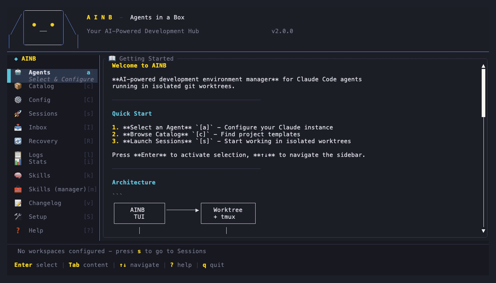
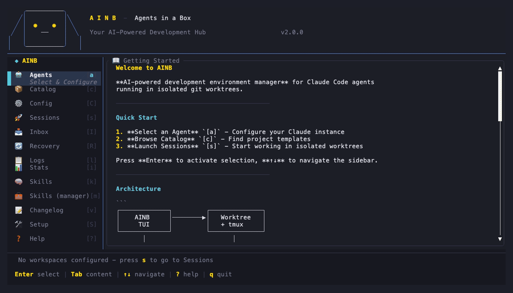
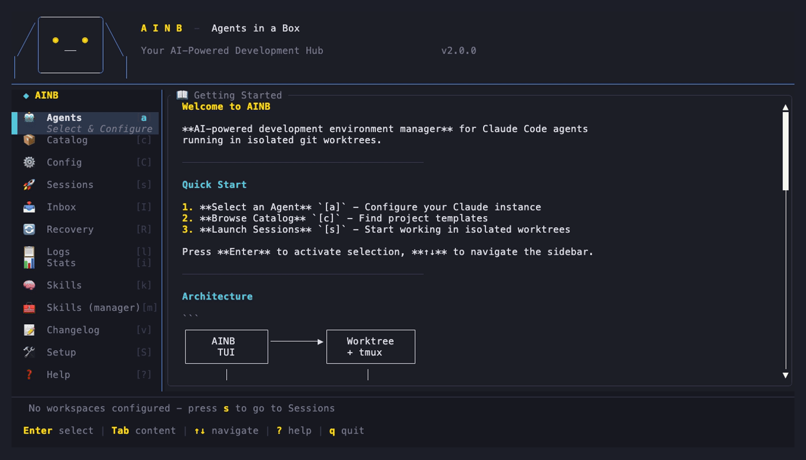
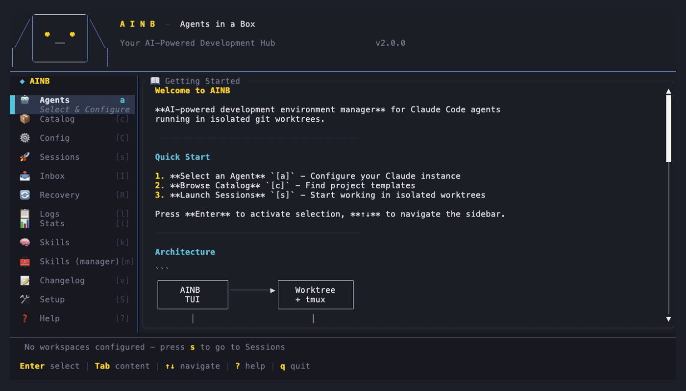
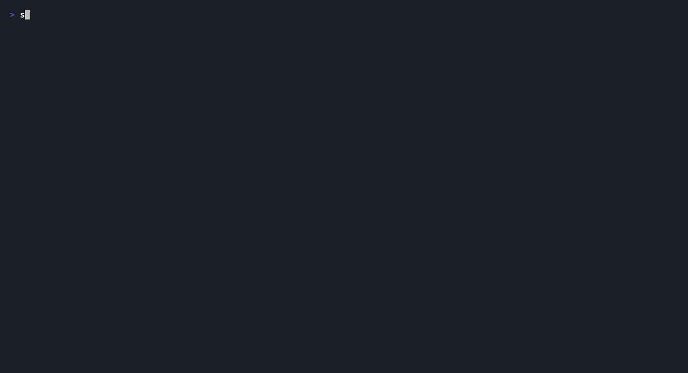

One screen to keep the skills, agents, commands and plugins for all your AI coding tools — Claude Code, Codex, Cursor, Copilot, Gemini — in sync. Install from a repo or the catalog, adopt what's already on your machine, keep your own skills in a library, and push your edits back upstream — across every tool at once.
Run ainb, then press m (or pick Skills (manager) in the sidebar). You get three panes:
Where your skills come from — repos you added, the catalog, your own machine.
The actual skills / agents / commands / plugins, each with a status glyph on the right.
Info on the selected unit — its URI, where it deployed, how often you've used it.
| Press | What it does |
|---|---|
| m | Open the Skill Manager (from home) · press again to re-scan for new skills |
| i | Add a source — paste a repo like gh:owner/repo |
| b | Browse the catalog — search for new skills online, Enter to install |
| l | Your library — skills you wrote yourself |
| u | Update the selected skill to latest |
| c | Check which skills are behind upstream |
| r | Remove the selected skill |
| s | Sync — push your local edits back upstream |
| / | Search / filter the list |
| ↑↓ j k | Move the cursor · g/G first/last |
| q Esc | Leave |
ainb migrate --discover
ainb skill browse <query> → ainb skill install <uri>
ainb skill library new <name> · ainb skill library listsync: notification; your change is committed + pushed.
ainb skill sync --to-repo
ainb skill check · ainb skill update <uri> · ainb skill remove <uri>ainb skill check --source <name> to scope on the terminal.Every journey, recorded both ways — the TUI keypresses and the equivalent CLI commands. (Recorded with vhs.)

A reconciler for units (skills, agents, commands, mcp-servers, hooks, and Claude plugins) across many tool homes and source repos. State lives in three YAML files — no database. Every key maps to an event and a real on-disk effect.
| File | What it holds |
|---|---|
| manifest.yaml | Your source of truth: sources (each with a target_layout) + the units you manage. User-authored, git-diffable. |
| lock.yaml | Resolved state: each unit's pinned SHA, deploy paths per tool, usage telemetry. |
| library.yaml | Your own authored skills — a first-class personal library. |
All under ~/.agents-in-a-box/. Plain serde load/save — reviewable in a PR, never an opaque store.
# Class-A — Claude marketplace plugins ~/.claude/plugins/cache/<mp>/<plugin>/<ver>/.claude-plugin/plugin.json → marketplace:<plugin>@<mp> # Class-C — orphan units across 9 tool homes ~/.{claude,codex,copilot,gemini,cursor,amazonq,claude-desktop,cline,roo}/{skills,agents,commands,...}/ # Provenance matcher (pure) — attribute each finding to its real source attribute(classA, classC, sources) → Vec<AttributedUnit> Marketplace | ExternalRepo (external-dependencies.yaml) | Toolkit | AlreadyAdopted | Local
plugin.json and treats a plugin as a bundle of skills — the exact layout other skill managers deliberately filter out. The matcher resolves an externally-cloned skill to its gh: upstream instead of mislabelling it local:.sources:
- name: my-skills
uri: gh:owner/repo
target_layout:
- glob: "skills/*/SKILL.md"
home: ".claude/skills" # where it lands on your machine
repo: "skills" # where it lives in the repo
The pure resolve_pair(source, unit_path) translates each unit's path into its (home, repo) pair (first-glob-wins); an empty layout falls back to bootstrap defaults.
plan_sync(source, mappings, units) # pure: direction per unit → ToHome → apply_to_home() # fetch upstream, atomic write ToRepo → apply_to_repo() # copy, git add/commit/push (per-source lock)
Unlike one-way installers, ainb does push-back: edit a deployed file, press s, and your change is committed + pushed to the source. A per-source lock at .git/ainb-sync.lock stops two syncs racing.
| Subsystem | Production | Tests |
|---|---|---|
| Drift | GitLsRemoteBackend — git ls-remote → ✓/⚠/▲/⟷, background poll on open | MockBackend |
| Catalog | SkillsShHttpBackend — skills.sh; key from config.toml [skills].api_key or AINB_SKILLS_API_KEY | MockCatalogBackend (zero network) |
| Key | Effect |
|---|---|
| m | reload from disk · drift poll · run walkers · (re-)show banner, clearing any skip-marker |
| Enter (banner) | reconcile walker output → write manifest |
| i | ainb source add <uri> in-process → reload |
| b | CatalogBackend.search → results modal → install selected |
| l | render library.yaml owned skills |
| u / r | ainb skill update/remove on the selected unit → toast + reload |
| c | re-trigger background drift scan → glyphs refresh |
| s | no peer → sync intent + toast; conflict pair → flip shadowed_by |
| / | filter Units (name / source / kind) |
A feature-gated sandbox fixture seeds a fake ~/.claude/~/.codex + a bare git remote, used by both in-process tests and a scripts/skill-manager-sandbox.sh launcher for manual testing. Three tiers: pure unit tests, CLI integration tests, and live tmux tripwires that spawn the real binary, press keys, and assert the captured pane — every keybind proven end-to-end against the actual program. (The Demos tab gifs above were recorded the same way, with vhs.)